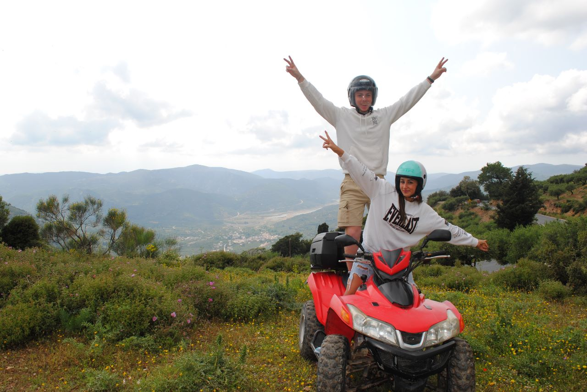

יוון

אני לא יודע מאיפה להתחיל, הטיול ליוון הייתה אחת החוויות הכי מעצימות ומגשבות שלנו ביחד, למדתי להכיר אותך מבפנים ומבחוץ ברמות שלא הכרתי מלפני והערצה שלי כלפייך רק התעצמה. גיליתי על העוצמות שלך ועל הגישה החיובית שלך לסיטואציות בחיים שלך ואני חושב שאני ואת זאת התאמה מושלמת. אם ננה להסתכל שנייה מנקודת מבט אובייקטיבית זה מטורף שסך הכל אחרי שלושה חודשים שאנחנו ביחד כבר סגרנו טיול ליוון ביחד?? את קולטת איזה מטורף זה שאחרי תקופה קצרה כלכך שנינו כבר ידענו שאני ואת זה עד הסוף. הטיול עצמו היה מדהים משלב התכנון שלו עד סוף הטיול שלנו, למרות שנתקלנו בקשיים מסויימין במהלך הטיול שהיו יכולים לשבור אחרים ידענו לשמור על אופטימיות, לשתף את הרגשות שלנו אחד עם השני ולפתור את הבעיות שלנו ביחד.
היום הראשון שלנו היה מעולה, זה זה התחיל עם טיסה קלילה ועם הבחור ההוא שמספר לכולם ביוון שהוא אוהד של מכבי חיפה, זה המשיך עם נסיעה ארוכה באוטובוס שבה הכרנו את אפיק, תהל, רותם וזיו שלא ידעו מילה באנגלית והייתי צריך להשוויץ באנגלית שלי ולדבר בשבילם בקבלה. למזלנו למרות שהם רצו שנהיה חדר ליד חדר קבלנו שדרוג מטורף עם חדר שהוא עם חצי נוף לים והחדר עצמו מעוצב בצורה כלכ יפה, צבעים מדהימים, מיטה ענקית לשנינו ומקלחת עם זרמים מטורפים מכלכך הרבה כיוונים. באותו היום היינו קצת בשוק ממזג האוויר שהיה ובאיזשהו מקום טיםה התבאסנו שהוא לא כמו שציפינו שיהיה (ותוה להתחממות הגלובלית) אז ביום ראשון התחלנו ללמוד את האוטובסים ונסענו בגשם למרכז קניות רק בשביל לגלות השוא סגור כי זה יום ראשון והוא כמו שבת אצלהם. באותו רגע אני מאוד התבאסתי , התבאסתי בשביל עצמי אבל בעיקר בשבילך ואיכשהו את , את תמיד עם חיוך על הפנים ולמרות שנסענו שעה לכל כיוון לחינם את תמיד ראית את הצד החיובי בכל הדבר הזה, דיברת איתי באוטובוס על נקודת מבט ודרך הסתכלות אופטימית על סיטואציות בחיים ואני יכול להגיד שלמדתי ממך להסתכל על סיטואציות שקורות לי בחיים בצורה הרבה יותר חיובית,גם שעל פניו נראה שהכל לא הולך כפי שרצינו תמיד לחשוב שהכל לטובה ותמיד לנסות לראות את חצי הכוס המלאה. כשחזרנו למלון הלילה נגמר בחוויה שאין כמוה, עשינו את זה בפעם הראשונה ואני כלכך זמח שזכיתי לעשות את זה איתך ועוד בפאקינג יוון, ואחרי הפעם הראשונה היה פעם שנייה ושלישית וזה רק התקדם וכל המלון כבר ידע מי אנחנו מרוב המצעים שהחלפנו.
בימים הבאים המצב רוח נשאר גבוה, מזג האוויר השתפר והמשכנו לצבור עוד מלא חוויות, הלכנו לבר של אירים ושרנו "טימבר" ביחד על הבמה כאילו אנחנו חלק מהמקום למרות שזאת פעם ראושנה שלנו שם, עשינו קניות במרכז קניות הגדול וקנית מלא דגמחים יפים וגם שתינו הרבה סטארבקס, בהמשך עשינו מסאז כיפי ומפנק שאמנם היה קצת אוברייטד אבל למדנו לפעם הבאה לא להקשיב לזאת שלטענך התחילה איתי, המשכנו לצבור חוויות ולאוכל המון גלחידה וקינוחים בחדר האוכל. עשינו קארטינג, שגם שם היה ברור שאני אנצח, והחלק הכי טוב בקארטינג וביוון זה כמה האנשים נחמדים, מיד אחרי שסיימנו את הקארטינג הבעלים של המקום לקח אותנו ברכב שלו עם שני המקומות למצוא תחנת אוטובוס והוא אפילו רץ איתנו רק בשביל שנספיק לאוטובוס, אני בחיים לא אשכח את הבנאדם הזה.
יום אחרי כבר היה מזג אוויר נעים, בלי גשמים וניצלנו אותו לטיול טרקטורנים מטורף שכלל חוויה יווונית אמיתית ולמידה של ההיסטוריה היוונית, עברנו ביון כפרים והרים, עברנו בעיר שהייתה נמאצ מתחת למים ואפילו אכלנו פסטה וגבינה במסעדה יוונית קלאסית בכפר שנמצא במעלה ההר, והמדריך שלנו היה בנאדם מתוק ברמות שהעביר את כל החוויה בכיף והוא גם צלם נדיר ויצאו לנו משם תמונות נדירות.
והחוויות שלנו לא נגמרו, אחרי שסופסוף הגיע יום שמשי עשינו אופנוע ים ושם ראינו שאת נהגת מקצועית ברמה הגבוהה ביותר, התהפכנו באשמתי במהירות של פאקינג 80 קמ"ש ואת הפחדת אותי ברמות שלרגע נעצרה נשמתך ולא הגבת לי, אבל למזלי התאפסת ואת פה איתי היום ומיד אחרי שסיימנו שם חזרנו מהר למלון כדי ללכת לפארק מים שהיה כמעט כולו שלנו ושם עשינו את כל המגלשות הכי מהירות והיה את המתקן ההוא שההוא לא שרק לי בזמן ונפלתי על הגב לתוך הבריכה, ואת, כמו חברה טובה התחלת להקרע עליי מצחוק.
וזהו, הגענו לנסיעה חזור, כמו שאמרתי למעלה הטיול שלנו ביחד הייתה אחת החוויות הכי טובות שלנו ביחד, למדנו אחד על השני כלכך הרבה, הכרנו אחד את השני הרבה יותר לעומק (נפשית ופיזית😉) והטיול שלנו ביחד נתן לי חשק ורצון להמשיך ולבור איתך חוויות עד סוף החיים. לפני הטיול שמעתי אזהרות בנוגע להאם זה מוקדם מדי ללכת ביחד ושיכול ליהות שימאס לנו מהר אחד מהשי, אבל ההפך הגמור קרה, לא רק שלא נמאס לי ולא ימאס לי ממך בחיים, הרצון להיות איתך עווד רק התחזק והתגבר. נסיכה שלי, בסיכום כל מה שכתבתי נראה שעשינו כלכך הרבה דברים ונהנו ברמות, אבל מה שבאמת למדתי במהלך הטיול זה כשאני איתך לא באמת משנה לי מה אני עושה אני תמיד נהנה ,אנחנו לא חייבים לעשות דברים פסיכיים ומטורפים רק כדי להנות אחד מהשני, כמו שכתבת לי פעם: " כשאני איתך אני נהנת גם כשאני עולה במדרגות", המשפט הזה נכנס לי לתוך הראש ואני רוצה שתדעי שאני מרגיש בדיוק כמוך ובגלל התחושה הזאת אני יודע להגיד שאת האחת שלי לעוד הרבה חוויות ושנים ביחד, אני אוהב אותך נסיכה שלי❤️